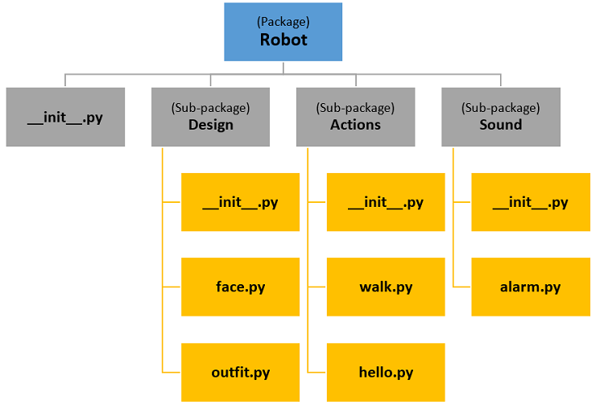
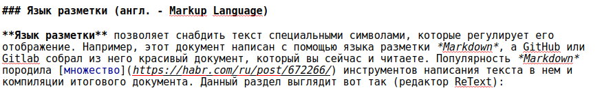

Терминология¶
В данном курсе мы будем использовать терминологию, связанную с разработкой программного обеспечения, поэтому полезно собрать все термины в одном месте. Ниже мы будем приводить русский и английский варианты терминов, так как последние будут полезны при поиске информации. Мы не претендуем на полноту списка терминов, используемых для разработки приложений, но постарались собрать те из них, которые важны в рамках данного курса, и по возможности снабдить их примерами.
Приложение (англ. Application)¶
По-английски это Application, или app. Последнее часто используется при написании приложений. Например, при написании бэкэнда используется именно это имя для того, чтобы обозначить главное приложение.
(код):
from fastapi import FastAPI
app = FastAPI()
@app.get("/")
async def root():
return {"message": "Hello World"}
Модуль/Пакет/Библиотека/Фреймворк (англ. Module/Package/Library/Framework)¶
Эти термины связаны с организацией кода и с тем, как он функционирует. Если мы хотим, чтобы наш проект можно было читать и, как следствие, он был интересен другим разработчикам, которые могли бы его развивать, мы должны позаботиться о структуре проекта. Все начинается с модуля, модуль — это файл с кодом, который объединен общим смыслом. Например, если у нас есть код для генерации данных и их визуализации, будет неплохой идеей разделить его на два файла-модуля. Примечание: если модулей генерации данных и визуализации несколько, мы уже будем объединять их в пакеты, о которых речь пойдет ниже. Python-модули имеют расширение .py.
(код):
"""From module genearating data"""
def generate_arithmetic_series(n):
return list(range(n))
def generate_geometric(b, n):
return list([b**i for i in range(n)])
(код):
"""From module plotting data"""
import matplotlib.pyplot as plt
def plot_lines(data):
plt.plot(data)
plt.show()
def plot_dots(data):
x = [x for x in range(len(data))]
plt.scatter(x, data)
plt.show()
Модули привносят множество преимуществ в наш код:¶
Улучшенный процесс разработки. Модули Python помогают вам сосредоточиться на одной небольшой части задачи, не держа в голове весь контекст проекта. Кроме того, модули обычно пишутся таким образом, чтобы свести к минимуму зависимость друга от друга. Почти всегда, когда возникает желание использовать код одного модуля в другом и наоборот, можно выделить взаимный код в третий модуль и использовать его в двух первых. Также мы уменьшаем количество конфликтов при слиянии кода (
merge conflict).Уменьшение количества кода. Функциональность, которую мы определяем в одном модуле, можем использоваться в разных частях приложения, сводя к минимуму дублирование кода.
Отдельные пространства имен. С модулями Python вы можете определить отдельные пространства имен, чтобы избежать конфликтов между идентификаторами в разных частях вашего приложения.
Термин пакет является достаточно перегруженным, и его значение может меняться в зависимости от контекста. Так как в курсе мы в основном работаем с Python, будем придерживаться терминологии, принятой в нем. Пакет — это следующий уровень в организации кода после модулей. Если модули содержали функции и классы, то пакет уже содержит сами модули. Для того, чтобы каталог был воспринят как пакет, он должен содержать файл __init__.py. Пример пакета:

Пакеты могу содержать внутри себя каталоги, которые, в свою очередь, тоже являются пакетами.
Библиотека — это общий термин для кода, который можно переиспользовать. Мы все пишем код и собираем его в модули и пакеты, но это не значит, что наш код можно считать библиотекой. Для этого он должен обладать некоторой долей универсальности, определенным оформлением и другими элементами, например, покрытием тестами. Т.е. библиотека обязательно является пакетом, но не каждый пакет можно считать библиотекой. Например, на сайте numpy указано, что это пакет:
NumPy is the fundamental Python package for scientific computing
При этом на сайте другого популярного проекта matplotlib говорится, что это библиотека:
Matplotlib is a comprehensive library for creating static, animated, and interactive visualizations in Python
Поэтому есть мнение, что библиотека — это пакет с пакетами, т.е. что-то, что обладает более разносторонней функциональностью, чем пакет.
Итак, мы подобрались к самым сложным объектам — фреймворкам. Наиболее подходящий перевод с английского — основа или каркас, т.е. что-то, на чем мы строим или на что навешиваем свой функционал. Идея фреймворков появилась, когда программисты поняли, что часто используют библиотеки почти одинаковым способом. Например, нам нужно принять данные от пользователя, валидировать их и сохранить в базе данных. Можно «поднять» все необходимые компоненты и написать все это вручную, а можно взять готовый фреймворк, где уже будет реализованы базовый поток данных и архитектура приложения, и нам нужно будет только написать код, который относится к нашей задаче. Поэтому распространенное определение, что фреймворк — это набор библиотек, не совсем верно. Можно думать о различии библиотеки и фреймворка так: если мы не напишем ни одной строчки кода, фреймворк все равно будет работать и поддерживать базовый поток. Поэтому тот код, который напишет программист, используя фреймворк, будет выполняться и контролироваться этим фреймворком. Еще один способ думать о фреймворках — это насколько полным является его функционал для решения задачи, т.е. мы можем ли решить бизнес-задачу, не выходя за пределы какого-то инструмента. Мы часто слышим про фреймворки в контексте web-приложений, но этим не ограничивается их применение.
Парадигма программирования (англ. programming paradigm)¶
Способ, как мы смотрим на то, что происходит при разработке. Например, с точки зрения водителя улица, через которую он едет транзитом, это ширина проезжей части дороги, количество светофоров и прочее. Но улица, на которой расположен пункт назначения, уже рассматривается водителем с точки зрения удобства парковки, хотя на транзитной улице тоже есть парковочные места. Т.е. на одну и туже сущность улица мы можем смотреть под разными углами, в зависимости от того, что сейчас для нас важно. Парадигма программирования — это способ описать задачу, например, данные и действия над ними. Рассмотрим на примере процедурной и объектно-ориентированной парадигм. Процедурное программирование описывает список действий (процедур), которые мы предпринимаем для достижения цели. Объектно-ориентированное программирование строится вокруг объектов и их свойств, здесь мы применяем такие термины как Класс, Экземпляр (Объект), Поле (Аттрибут), Метод. Объектно-ориентированное программирование — наиболее часто используемый подход, хотя существуют задачи (1, 2), где решение лучше описывается в других парадигмах. Подробнее об ООП на примере Python читайте в статье. На практике мы можем смешивать парадигмы, если это не вредит поддерживаемости кода. Ниже приведен пример решения одной и той же задачи с использованием разных парадигм:
(код):
# PROCEDURAL
def average_age(table):
average = 0
count = 0
for item in table:
average = average + item[1]
count = count + 1
return average / count
people = [("Ivan", 24), ("Mary", 20), ("Alex", 21), ("Sara", 29)]
print("Average age:", average_age(people))
(код):
# OOP
class Person:
def __init__(self, name, age):
self.name = name
self.age = age
class Workers:
def __init__(self):
self.workers = []
def add(self, worker):
self.workers.append(worker)
def get_average_age(self):
age_sum = 0
for worker in self.workers:
age_sum = age_sum + worker.age
return age_sum / len(self.workers)
workers = Workers()
workers.add(Person(name="Ivan", age = 24))
workers.add(Person(name="Mary", age = 20))
workers.add(Person(name="Alex", age = 21))
workers.add(Person(name="Sara", age = 29))
print("Average age:", workers.get_average_age())
Что такое? Почему в ООП больше кода, когда это такая классная парадигма? Все верно, кода больше, но он лучше структурирован, и нужно думать не о количестве кода, а о том, насколько его легко читать и насколько его легко поддерживать. Например, средний возраст — это характеристика группы людей, поэтому мы пишем метод в Workers, а если мы хотим написать метод, который увеличит возраст сотрудника в день его рождения, мы идем в класс Person. Также в процедурном программировании часто возникают конструкции типа item[1], и мы должны помнить, что возраст — это индекс 1 (а не 0, индексы нумеруются от нуля). В объектно-ориентированном мы не работаем с большой таблицей данных, а структурируем информацию в том виде, с которым принято работать в той или иной сфере. Подумайте, как бы вы решили следующие задачи:
храним не возраст, а дату рождения, и нужно по-прежнему знать возраст;
хотим уволить :( человека.
Статическое и динамическое типизирование¶
В Python мы можем объявить переменную без указания типа, интерпретатор сам определит тип переменной. Это называется динамическая типизация.
if __name__ == "__main__":
magic_number = 42.
print(type(s))
С другой стороны, когда в описании переменной необходимо указывать тип, мы имеем дело со статической типизацией. Она применяется как в C++, так и во многих других языках.
#include <iostream>
int main() {
float magic_number = 42.;
std::cout << "Hello " << magic_number;
return 0;
}
Теперь посмотрим не со стороны языка программирования, а со стороны разработчика. При объявлении переменной ее тип может быть понятен из значения, которое в ней хранится. Но при использовании функции мы не можем понять, что именно мы должны передать без использования документации. Поэтому мы можем использовать аннотацию типов и в таких языках как Python:
(код):
def fib_nohint(n):
a, b = 0, 1
while a < n:
yield a
a, b = b, a+b
def fib_hint(n: int) -> Iterator[int]:
a, b = 0, 1
while a < n:
yield a
a, b = b, a+b
Функцию, где указаны типы аргументов и тип возвращаемого значения, проще использовать. Кроме удобства при чтении кода, можно добавить также и валидацию значений переменных, используя библиотеку pydantic. Проводить проверку своего кода на наличие аннотирования можно, используя такие инструменты как mypy.
Тестирование¶
Оно должно быть. Рассмотрим здесь несколько важных терминов: Покрытие тестами (англ. Test Coverage) — доля кода, которая покрыта тестами, т.е. та часть кода, которую мы действительно выполняем с использованием тестовых данных. Ниже приведен пример на C++: код скомпилируется, но при этом его нельзя выполнить без ошибки. Если бы функция foo была покрыта тестами, мы бы увидели ошибку сразу.
(код):
#include <iostream>
int main() {
std::cout << "Hello World!";
return 0;
}
float foo(int a) {
a = 0;
return 42. / a;
}
Разработка через тестирование (англ. Test-driven development) — подход, при котором мы сначала пишем тесты, и только потом разрабатываем саму функциональность. На практике это не всегда достижимо и не всегда удобно, поэтому в написании тестов после разработки функциональности нет ничего плохого.
Юнит-тестирование (англ. Unit Testing) — разбиение программы на мелкие блоки, каждый из которых может быть протестирован отдельно. Пример ниже содержит простой класс, который умеет только добавлять 10 и умножать на 10. Мы можем подумать над тестами заранее (Разработка через тестирование) или написать тесты потом, в любом случае, нам нужно добиться прохождения тестов. На практике вы будете использовать библиотеки типа unittest, пример ниже специально написан без использования сторонних библиотек, чтобы показать концепцию тестирования и не отвлекаться на изучение конкретных инструментов. Позже в курсе тестированию будут посвящены отдельные занятия.
(код):
class Calculator:
def add_10(a):
return a + 10
def multiply_by_10(a):
return a * 10
if __name__ == "__main__":
# testing code
assert Calculator.add_10(12) == 22 #test 1
print("Pass test 1")
assert Calculator.multiply_by_10(12) == 120 #test 2
print("Pass test 2")
try: #test 3
Calculator.add_10("asda")
print("Fail test 3")
except:
print("Pass test 3")
try: #test 4
Calculator.multiply_by_10("asda")
print("Fail test 4")
except:
print("Pass test 4")
Подумайте, почему четвертый тест не прошел и как сделать так, чтобы он отработал. Оцените, насколько удобно иметь тесты.
Логирование (англ. Logging)¶
Ведение журнала событий, в котором записывается информация, облегчающая отслеживание событий, которые нельзя отнести к нормальной работе кода или системы в целом.
Язык разметки (англ. Markup Language)¶
Язык разметки позволяет снабдить текст специальными символами, которые регулируют его отображение. Например, этот документ написан с помощью языка разметки Markdown, а GitHub или Gitlab собрал из него красивый документ, который вы сейчас и читаете. Популярность Markdown породила множество инструментов написания текста в нем и компиляции итогового документа. Данный раздел выглядит вот так (редактор ReText):

Система контроля версий (англ. Version Control System)¶
Система контроля версий позволяет облегчить работу над приложением, даже при работе в одиночку. При работе в команде она практически незаменима. В курсе мы будем использовать git, которому посвящено несколько занятий. На основе git построены такие системы как GitLab и GitHub, которые предоставляют удаленный репозиторий git и привносят дополнительную функциональность, такую как отслеживание багов через *Задачи/Проблемы (англ. Issues), визуализацию и многое другое.
Ошибка (англ. bug)¶
Ошибка или непонятное поведение программы, в общем, все, что нельзя отнести к нормальному поведению программы. Часто используется прямая транскрипция с английского — баг. Баг может приводить к сбоям при использовании определенного места в программе, и это хороший сценарий, поскольку сразу понятно, где ошибка. В примере ниже в print_value() идет обращение к переменной, которую ранее нигде не инициализировали, это можно исправить, написав self.value вместо value
(код):
class ClassWithBugFailFast:
def print_value(self):
print(value)
def set_value(self, value):
self.value = value
if __name__ == "__main__":
cls = ClassWithBugFailFast()
cls.set_value(123)
cls.print_value()
Часто бывает, что ошибки не происходит, но поведение программы неочевидно.
(код):
class ClassWithBugNoFail:
def print_value(self, value):
print(self.value)
def set_value(self, value):
self.value = value
if __name__ == "__main__":
cls = ClassWithBugNoFail()
cls.set_value(123)
cls.print_value(456)
Задачи/Проблемы (англ. Issues)¶
Одна из целей, которые преследуют Issues, — документирование багов и отслеживание их решения. Однако они используется гораздо шире и, как многие другие инструменты, призваны повысить эффективность разработки приложений.
Fail-fast¶
В примере выше мы посмотрели, что неправильно написанный код, который сразу приводит к ошибке, лучше, чем код, который приводит не к ошибке, а к непонятным результатам. Понятно, что мы не планируем писать баги, но поведение, при котором мы вызываем ошибку (кидаем исключение) при непонятной ситуации, получило название fail-fast. Подход fail-fast является предпочтительным при написании кода, так как позволяет определить место, где произошла ошибка. Другим подходом при обработке непредвиденной ситуации является подход forgive, при котором мы пытаемся уменьшить негативные последствия и стараемся не кидать ошибки. Подробнее про два подхода можно почитать в статье
Исключение (англ. Exceptions)¶
Исключительная ситуация требует исключительных мер. При работе приложения мы стараемся предусмотреть возможные варианты его использования, например, варианты входных данных, которые приходят в приложение от пользователя. Данные от пользователя могут быть недопустимыми, и мы можем попробовать исправить это. Например, конвертировать строку, содержащую число, в целое число, используя int(), а если не получится, то float(). Для данного примера считаем, что это приемлемый вариант.
(код):
class Validator:
def get_int_number(string):
result = 0
try:
result = int(string)
except ValueError:
print('Could convert to int, try via float:')
result = int(float(string))
return result
if __name__ == "__main__":
print(Validator.get_int_number('10.'))
try:
user_input = 'aaa'
Validator.get_int_number(user_input)
except ValueError:
print(f'{user_input} is not a number, please enter proper data')
except Exception as e:
print(f'Unknow error ask developers {e}')
Если не получается конвертировать в число в принципе, как в случае со строкой 'aaa', мы можем попросить пользователя повторить ввод. Если же происходит что-то, что мы не можем идентифицировать, то тоже должны «поймать» это на верхнем уровне (в примере выше это except Exception as e) и зафиксировать: можно, например, записать сообщение об ошибке в лог.